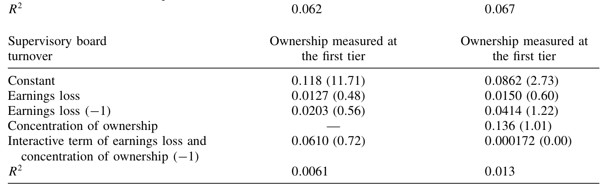
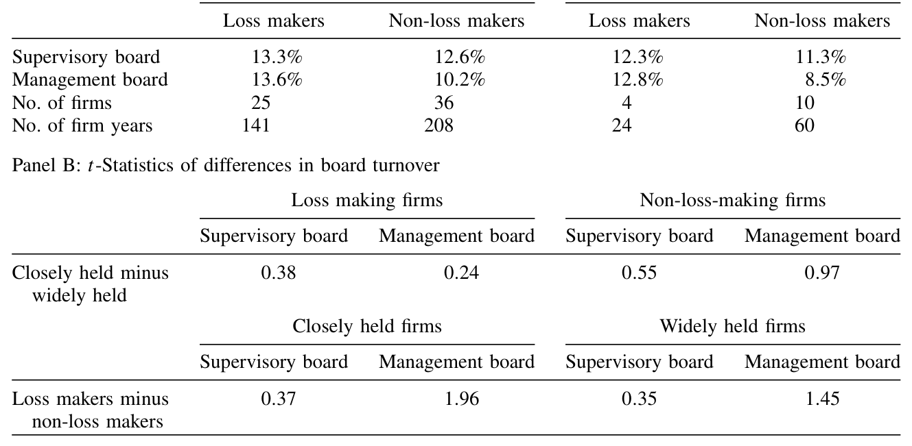
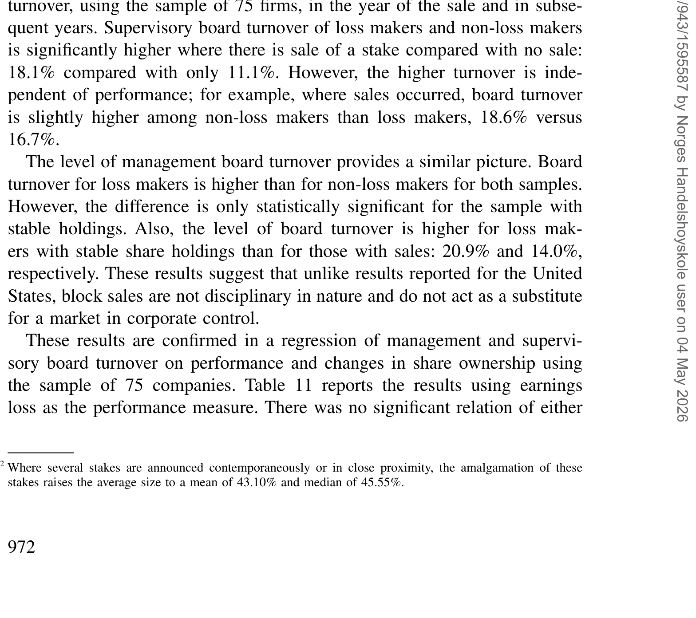
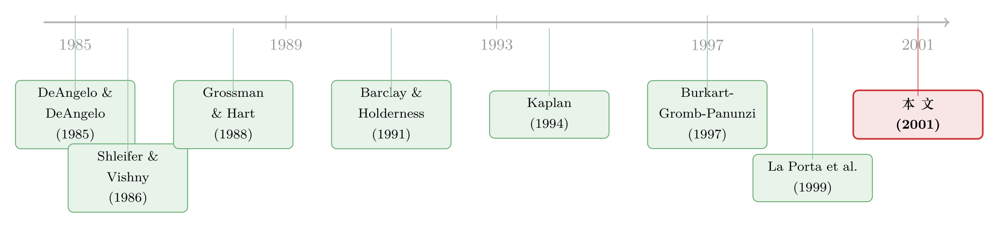

股权最集中的德国，治理却和英美一样平淡——直到你看它的『动态』
本文读的是 Franks & Mayer (2001, Review of Financial Studies)：德国公司的股权高度集中，按教科书的逻辑，治理本该比英美「更硬」。但作者发现，静态地看，德国的董事会更替对业绩的敏感度、以及集中股权能否带来更强的纪律约束，几乎和英美没有差别；真正的差异藏在「动态」里——德国有一个活跃的大宗股权转让市场，可这个市场的溢价全部落进了大股东的口袋，小股东一分不沾。这道裂缝，恰恰量出了控制权的「私人收益」。
1 一个本该有标准答案的问题
先讲一个几乎所有公司金融教科书都会写进去的判断。
按照 Shleifer 和 Vishny (1986) 的经典逻辑，分散的股权会带来「搭便车」问题：没有谁持股足够多，因而没有谁有动力去花成本盯着管理层。英美就是这样一个「外部人系统 (outsider system)」——股权分散、股票市场庞大、控制权市场活跃。于是一个很自然的推论是：如果某个国家的股权高度集中，那里就该有人愿意承担监督成本，治理理应更强、对管理层的纪律约束理应更硬。
德国，看上去就是这个推论的完美检验对象。
它是典型的「内部人系统 (insider system)」：上市公司不到 800 家（英国接近 3000 家），而且股权集中得惊人。在作者手里那份 171 家最大工业与商业上市公司的样本里，85.4% 的公司有一个持股超过 25% 的大股东，57.3% 有控股的多数股东，22.2% 的公司单一股东持股超过 75%。作为对照，1992 年英国一份规模相近的样本里，只有 13% 的公司有股东持股超过 25%，超过 50% 的仅 6%。
如果集中股权真的等于强治理，那么德国理应是一个老板「坐不住」的国度。
但 Shleifer 和 Vishny 的硬币还有另一面。Bebchuk (1999) 强调，内部人系统会滋生「控制权的私人收益 (private benefits of control)」，反而损害效率；La Porta, Lopes-de-Silanes 和 Shleifer (1999) 则指出，德国的民法体系对小股东保护薄弱。按这套逻辑，集中的股权对应的可能是弱治理，而非强治理。
于是问题就有了张力：同一个事实——股权极度集中——指向两个相反的预言。德国到底站在哪一边？
2 数据：171 家、75 家，和三场敌意收购
要回答这个问题，先得把德国公司的所有权「画」出来。作者收集了两套数据。
较大的一套是 1990 年从 Hoppenstedt 股票指南整理的 171 家工业与商业上市公司，它们是当年德国 477 家工业商业上市公司中规模最大的一批（平均市值 23.4 亿马克）。较小的一套是从中筛出、并能补齐 1989–1994 年财务业绩与董事会数据的 75 家公司——本文 Section 2 和 3 的核心分析都建立在这 75 家之上。
此外，作者还做了三场敌意收购 (hostile takeover) 的案例研究：Flick 兄弟与随后的 Veba AG 对 Feldmühle Nobel 的收购（1988–1989）、Pirelli 对轮胎厂 Continental 的收购（1990–1991）、以及 Krupp 对 Hoesch 的收购（1991–1992）。这些案例配上对一线收购方的访谈，是后面理解「为什么收购溢价这么低」的关键。
这里要先说清楚德国的一个制度特点：双层董事会 (two-tiered board)。第一层是监事会 (supervisory board)，由股东代表、雇员代表等组成；它任命第二层的管理委员会 (management board)，后者相当于英美董事会里的执行董事。本文衡量的「董事会更替 (board turnover)」，定义为一年内非因退休或死亡而离开董事会的人数，除以年初董事会总人数；监事会更替只算股东代表，剔除雇员代表（他们的去留与业绩无关）。
数据备好了，接着就是把那个有张力的问题拆成两半来问。
3 静态的一半：集中股权，并没有让老板更「坐不住」
第一半问题是静态的：在不同所有权结构下，德国公司的董事会更替对业绩有多敏感？集中的股权、还是银行的影响，谁更能管住管理层？
Kaplan (1994b) 已经先走了一步：他发现德国的管理委员会更替确实和业绩相关，但所有权的规模与性质对此影响不大。本文沿着这条线往下挖，用了更精细的金字塔度量和一套全新的代理投票 (proxy votes) 数据。
结论分三层，一层比一层有意思。
首先，德国公司的董事会更替率，整体上和英美差不多——没有因为股权集中就系统性地更高或更低。
接着，一个自然的问题是：业绩差的公司，老板会不会被换掉？答案是肯定的，而且关系相当紧密。如表 7 所示，出现盈利亏损 (earnings losses) 的公司，其董事会更替显著上升——这和英美文献里 Weisbach (1988)、Martin 和 McConnell (1991) 记录的「业绩差→换帅」是同一个故事。换句话说，德国的董事会并非橡皮图章。

Table 7: records that earnings losses are associated with an approximately
然后，真正关键的一步在于：这种「业绩差就换人」的纪律，会不会因为有大股东而更强？作者把 75 家公司按持股集中度切开来比较（表 4）——结果令人意外：在大股东高度集中的公司里，管理层纪律并不比那些股权分散、由银行通过代理投票施加影响的公司更强。集中的所有权，并没有给治理「加 buff」。

Table 4: reports the results of partitioning the sample of 75 into closely
那么金字塔呢？德国公司著名的复杂持股网络，是不是大股东用来「以小博大」攫取控制权的工具？作者把家族持股一层层追到顶端，发现家族在「最终持股」里占 33.0%（第一层只有 20.5%），银行从第一层的 5.8% 升到最终的 12.0%——可见控制权确实比表面更集中。最经典的例子是戴姆勒-奔驰 (Daimler Benz)：Robert Bosch 通过三层金字塔，在 Daimler 的现金流权 (cash flow rights) 只有 1.56%，投票权 (voting rights) 却是 25%，两者之比高达 16——这正是 Bebchuk, Kraakman 和 Triantis (1999) 所说的「控制权少数股东结构」。
但把 38 家有详细持股数据的公司逐一审过之后，故事又被泼了冷水。在这 38 家里有 33 个金字塔，平均跨越 2.2 层；其中 23 家的投票权/现金流权之比大于 1，平均比值 1.6，只有 5 家超过 2。而真正构成「控制型金字塔 (controlling pyramid)」——即这套结构让某个股东得以跨越 25%、50% 或 75% 的关键控制门槛——的，只有 10 家。也就是说，金字塔被真正用于控制目的的，只占大约三分之一。
到这里，静态的那一半答案已经浮出水面：德国的所有权静态结构虽然「长相」和英美迥异，但它并没有翻译成一种独特的控制形态。在「谁来管老板、管得严不严」这件事上，德国和英美惊人地相似。
那张力消失了吗？没有。它只是搬了家。
4 动态的一半：一个活跃的市场，和一道分配的裂缝
本文真正的反转，在于把视角从「静」切到「动」——从「谁持有股权」切到「股权如何易手」。
战后的德国几乎没有英美式的、面向全体股东的公开要约收购市场。但它有另一个东西：一个活跃的大宗股权转让市场 (market in share blocks)。Burkart, Gromb 和 Panunzi (1998) 指出，部分股权的交易市场有助于克服搭便车问题；而 Bebchuk (1999) 则强调它可能制造私人收益问题。德国到底是哪一种？
作者去量了这个市场的「溢价分配」，结果是全文最锋利的一刀：
第一，德国的大宗股权溢价 (block premia) 远低于英美要约收购中支付给目标公司的溢价。
第二，也是最关键的——卖出大宗股权的人确实拿到了好处，但小股东完全没有分享到任何溢价。
这一点和英美形成尖锐对比。在英美的要约收购里，溢价是付给所有股东的；而在德国，溢价只付给坐在谈判桌前的那个大股东。这道「付给大股东的价」与「付给小股东的价（约等于零）」之间的裂缝，本身就是一把尺子——它直接量出了大股东所享有的控制权私人收益，而作者发现这个数额相当可观。
这正是 Barclay 和 Holderness (1991) 在美国大宗交易中提出、又被 La Porta 等人推向跨国比较的那条逻辑：当一笔控制权区块易手的价格远高于市场价，差额就是控制权能「私下」兑现的那部分。德国的特殊之处在于，这条裂缝被制度放得格外大。
但溢价为什么这么低？作者给的解释是：收购方能从控制中榨取的整体收益本来就小，因为新来的大股东在德国面对着重重的管理控制障碍。三场敌意收购的案例把这一点演得活灵活现——比如在 Pirelli 收购 Continental 时，Continental 管理层为了自保，向股东提出一项动议，把罢免监事会成员所需的多数门槛从 50% 一举提到 75%。控制权，是要靠真刀真枪「夺」的，而不是买下股票就能自动到手。
最后一块拼图，是把动态和静态接回去：股权大宗转让，会带来管理层的更替吗？作者把转让前的业绩和转让后的董事会更替对起来看（表 10），发现德国大宗股权交易后的董事会更替，明显低于英美要约收购后的水平，而且更替和业绩之间几乎没有关系。

Table 10: shows the relationship between sales of share stakes and board
这与「控制权变更整体收益偏低」的判断完全一致：既然换了大股东也未必能真正掌控、未必能换掉无能的管理层，那这个市场创造的价值自然有限，溢价自然低，而它分配出来的，主要就是大股东的私人收益。
于是，全文的核心论点收束成一句话：德国所有权的静态特征并没有催生出独特的控制形态，但所有权的转移——它的动态——运作得截然不同；这里揭示的是更小的并购收益、私人收益在德国资本市场中的分量，以及收购方所能施加的控制之有限。
5 文献脉络
把这篇文章放回它所处的研究长河里，线索其实很清晰。
源头是关于大股东与控制权的理论之争。Shleifer 和 Vishny (1986) 论证集中股权能克服搭便车、强化监督；Grossman 和 Hart (1988)、以及 DeAngelo 和 DeAngelo (1985) 则把「一股一票」原则及其偏离（双层股权、金字塔）写进了控制权理论。这一支后来由 Bebchuk, Kraakman 和 Triantis (1999) 总结成「控制权少数股东结构」的代理成本框架。
中段是对大宗股权与收购的实证与理论。Barclay 和 Holderness (1991) 用美国的协商大宗交易第一次系统地量出了控制权溢价；Burkart, Gromb 和 Panunzi (1997, 1998) 则在理论上厘清了大股东监督、收购溢价与小股东保护之间的张力。

到了跨国比较的转折点，La Porta, Lopes-de-Silanes 和 Shleifer (1999) 把「谁是终极所有者」这个问题铺到了全世界，强调法律保护如何塑造所有权（这条线后来延伸出整整一支文献，可参见《谁才是这家公司真正的主人？》）。而专门盯着德国的，是 Kaplan (1994b) 关于德国高管更替与业绩的研究。
本文的位置，就嵌在 Kaplan 和 La Porta 之间：它一方面用更精细的金字塔与代理投票数据，确认了「静态上德国治理并不特殊」（呼应、也修正了 Kaplan）；另一方面，又用大宗股权市场的溢价分配，给「私人收益」这个抽象概念找到了一把可量化的尺子。关于私人收益如何被「结构化地」估出来，后来的工作走得更远（可参见《控制权的私利，到底值多少钱？》与《拆掉一家公司，是为了让老板「坐不住」》）。这条「英美 vs 德国」的制度分野，也在作者本人后续的工作里延续成了「为什么英国人发债、德国人找银行」的更大叙事（参见《为什么英国人发债，德国人却找银行？》）。
6 评论与延伸（Q&A + 研究方向）
（a）几个可能的疑问
Q：既然 85% 的德国公司都有大股东，为什么治理却和股权分散的英美「一样」？
关键要把「监督的动机」和「监督的效果」分开。集中股权确实给了大股东监督的动机，本文也确认董事会更替对业绩敏感；但本文同时发现，集中股权并没有让这种纪律比英美更强。可能的原因是：英美虽然股权分散，却有活跃的控制权市场、机构投资者和法律约束来补位。两条不同的路，最后到达了相近的纪律水平。
Q：金字塔不是「以小博大」攫取控制权的经典工具吗，为什么这里只有三分之一用于控制？
因为「持股是间接的」不等于「持股是为了控制」。作者的判定标准很严格：必须投票权/现金流权之比大于 1，且现金流权与投票权要「跨越」25%、50% 或 75% 的关键控制门槛。很多金字塔只是历史形成的控股公司链条，并未真正放大控制权——38 家里只有 10 家满足控制型标准。这恰恰说明，复杂持股的「长相」会让人高估控制动机。
Q：「小股东拿不到溢价」就一定证明存在私人收益吗，会不会只是德国法律不要求强制要约？
两者其实是同一枚硬币。德国（至少在样本期）不存在英美式的强制全体要约义务，制度上允许大股东把溢价独吞——而正是这种制度安排，让控制权的私人收益得以兑现。本文的贡献不在于争论「机制是法律还是市场」，而在于用「大股东价 − 小股东价」这个可观测的差额，给私人收益标了一个价。
Q：收购溢价低，是不是说明德国的收购「更公平、更有效率」？
恰恰相反。本文给的解读是：溢价低是因为控制权变更的整体收益本来就小——新大股东面对监事会门槛、雇员共决等重重障碍，很难真正掌控公司、很难换掉无能的管理层（案例里 Continental 把罢免门槛抬到 75% 就是明证）。低溢价对应的不是高效率，而是「夺权」本身的高摩擦和低回报。
Q：银行在德国治理里到底有多重要？
直接持股层面被高估了——银行在超过 25% 的持股中占比不到 6%。但 Edwards 和 Fischer (1994) 指出，银行真正的影响力来自代理投票而非自有股份。本文用 Nibler (1998) 的代理投票数据把这一渠道纳入，发现在股权分散的公司里银行影响显著，但即便如此，它带来的管理层纪律也并不比集中股权的公司更弱或更强。
Q：这篇 2001 年的论文，对今天还有意义吗？德国所有权结构早就变了。
它的具体数字（如戴姆勒的金字塔）确实已成历史，作者自己也注明那个结构「现已显著改变」。但它的方法论与核心洞见经久不衰：不要只看所有权的静态分布，要看它如何转移；以及，用大宗交易的溢价分配来识别私人收益，至今仍是这条文献的标准工具。
（b）几个可能的研究问题与提案
-
把「溢价裂缝」搬到公司债市场。 【经济故事】本文用「大股东价 − 小股东价」量股权层面的私人收益。一个自然的延伸是：当控制权区块易手时，债权人的待遇如何变化？大股东攫取私人收益，往往以掏空资产、提高风险为代价，受损的可能不只是小股东，还有债权人。 【可行性】中。需要把大宗股权转让事件与发行人债券的二级市场利差对齐（如 TRACE 类数据 + 欧洲公司的债券报价）。识别上可用转让事件做事件研究，难点在于德国/欧洲样本期债券市场数据稀疏。
-
外资大股东 vs 本土大股东，谁更「独吞」溢价？ 【经济故事】三场案例里 Pirelli、Veba 等收购方身份各异。一个有意思的问题是：外资作为大宗股权买方时，其支付的溢价结构、以及随后施加的管理层纪律，是否系统性地不同于本土买方？这关系到「外资是不是更好的监督者」这一争论。 【可行性】中。需要按收购方国籍给大宗交易分类，并追踪交易后董事会更替与业绩。La Porta 类终极所有权数据可提供买方身份，但样本量是硬约束。
-
金字塔层级与流动性的关系。 【经济故事】控制型金字塔放大了投票权与现金流权的偏离，理论上会加剧小股东面对的逆向选择，从而压低个股流动性。能否用本文的「投票权/现金流权之比」直接预测买卖价差？ 【可行性】高。投票权/现金流权之比可从所有权数据构造，流动性指标（价差、Amihud）易得。识别上可用同一发行人不同类别股票（投票/无投票）的价差差异，做一个干净的横截面检验。
-
强制要约制度的引入作为自然实验。 【经济故事】本文样本期的德国没有英美式强制全体要约义务。德国 2002 年《证券收购法》引入强制要约后，「小股东拿不到溢价」这一现象是否被纠正？这是一个近乎完美的政策断点。 【可行性】高。可用 2002 年前后的大宗股权转让事件，做一个围绕法律生效日的双重差分 (difference-in-differences, DiD) 或断点设计，比较小股东溢价分享比例的变化。数据可得性较好，是这几个想法里最 doable 的一个。
7 我的判断
这篇文章最漂亮的地方，是它的克制与反转。
它没有顺着「集中股权 = 强治理」的诱人直觉一路写下去，反而老老实实地承认：静态地看，德国治理乏善可陈，和英美没有本质区别。这种「负面结果」本身就是贡献——它劝退了一代人对所有权结构的浪漫想象。而真正的洞见，是把镜头转向动态：用大宗股权市场里那道「大股东独吞、小股东出局」的溢价裂缝，把抽象的「私人收益」变成了可观测、可估算的东西。这个识别思路，后来被整条文献反复借用。
但对识别，我有两点保留。
其一，样本太小、太「头部」。核心分析建立在 75 家最大公司之上，金字塔判定只用了其中 38 家，控制型金字塔更是只数出 10 家。这些数字作为「描述性事实」很有说服力，但一旦想做回归、谈因果，统计功效就很吃紧——很多「无显著关系」的结论，未必是真的没关系，也可能是样本量不够。
其二，私人收益的估计依赖「小股东价≈市场价」这个隐含假设。如果大宗交易本身就传递了关于公司价值的信息，市场价会在交易前后漂移，那么「大股东价 − 小股东价」就混入了信息效应，未必是纯粹的私人收益。本文用案例研究来佐证，但缺一个能把信息效应剥离干净的结构化估计。
后续我最想看到的，是把这套「静态—动态」的二分法，移植到债权人和今天的德国：在 2002 年强制要约法之后，这道溢价裂缝是被填平了，还是只是换了个地方渗漏？以及，当控制权区块易手时，坐在小股东隔壁、却同样没有谈判桌席位的债权人，到底是和小股东一起出局，还是早被契约保护了起来？这两个问题，本文都为它们备好了尺子。
参考文献
Barclay, M., and C. Holderness (1991). Negotiated Block Trades and Corporate Control. Journal of Finance 46, 861–878.
Bebchuk, L. (1999). A Rent-Protection Theory of Corporate Ownership and Control. Working Paper no. 260, Harvard University.
Bebchuk, L., R. Kraakman, and G. Triantis (1999). Stock Pyramids, Cross-Ownership, and Dual Class Equity: The Creation and Agency Costs of Separating Control from Cash Flow Rights. Working Paper no. 6951, NBER.
Burkart, M., D. Gromb, and F. Panunzi (1997). Large Shareholders, Monitoring, and the Value of the Firm. Quarterly Journal of Economics 112, 693–728.
Burkart, M., D. Gromb, and F. Panunzi (1998). Why Higher Takeover Premia Protect Minority Shareholders. Journal of Political Economy 106, 172–204.
DeAngelo, H., and L. DeAngelo (1985). Managerial Ownership of Voting Rights—A Study of Public Corporations with Dual Classes of Common Stock. Journal of Financial Economics 14, 33–69.
Edwards, J., and K. Fischer (1994). Banks, Finance and Investment in West Germany Since 1970. Cambridge University Press, Cambridge.
Franks, J., and C. Mayer (2001). Ownership and Control of German Corporations. Review of Financial Studies 14(4), 943–977.
Grossman, S., and O. Hart (1988). One Share-One Vote and the Market for Corporate Control. Journal of Financial Economics 20, 175–202.
Kaplan, S. (1994). Top Executives, Turnover, and Firm Performance in Germany. Journal of Law, Economics & Organization 10, 142–159.
La Porta, R., F. Lopez-de-Silanes, and A. Shleifer (1999). Corporate Ownership Around the World. Journal of Finance 54, 471–517.
Shleifer, A., and R. Vishny (1986). Large Shareholders and Corporate Control. Journal of Political Economy 94, 461–488.
Shleifer, A., and R. Vishny (1997). A Survey of Corporate Governance. Journal of Finance 52, 737–783.
Weisbach, M. (1988). Outside Directors and CEO Turnover. Journal of Financial Economics 20, 431–460.